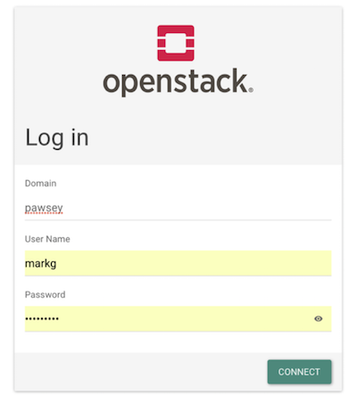
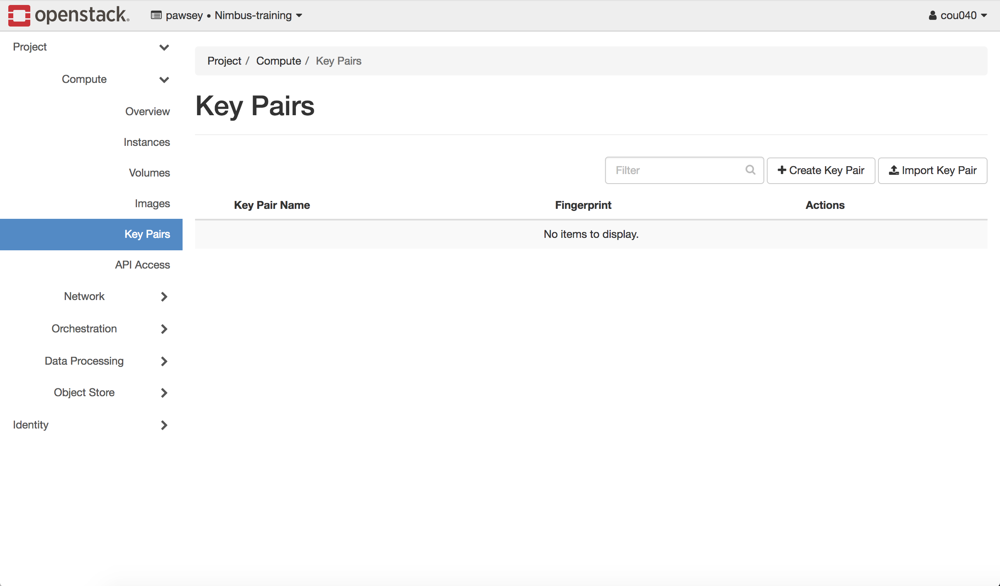
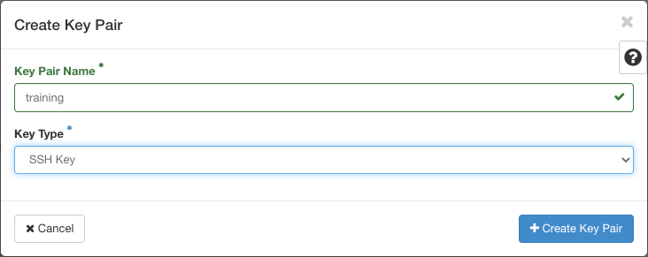

Authentication
Overview
Teaching: 5 min
Exercises: 15 minQuestions
What are key pairs and why do we need them?
How do we set up key pairs for Nimbus?
Objectives
Describe how key pairs are used to protect your Nimbus instance.
Generate a key pair for your instance using the Nimbus dashboard.
To maintain a secure system, we require all Nimbus users to have a key pair. Key pairs take the form of public (think: ‘lock’) and private (think: ‘key’) key files. These files are presented together to securely authenticate on a Nimbus instance. Without a key pair you cannot access your instance, as the username/password login option is disabled by default.
Secure access
The username/password login is not set up for new instances, as it is a less secure method of authentication than key pairs.
Question: Why are key pairs more secure than username and password?Answer
A key is much longer than a password and is completely randomly generated so it is harder to brute force; the key is not transmitted or typed on a keyboard, so it cannot be intercepted.
Activity: Log in to Nimbus
- Go to https://nimbus.pawsey.org.au. This is the URL for the Nimbus login.
- Log in, by either:
- Using your project username and password, if you are a current Nimbus user
- Using the username and password sent to you, if you are a new Nimbus user
As shown below, for Domain, select pawsey. Then type your user name and password.

- Once logged in you will find yourself in the Overview page of the Compute tab. Explore the dashboard by selecting different pages from the tabs in the menu on the left.
- You should be able to locate Instances and Key Pairs (shown below) - both under the Compute tab. We will be using these in creating our first instance, however both are empty at the moment.

Activity: Generating a Key Pair
- You should be in the Key Pairs panel under the Compute menu if you followed the activity above, if not then navigate there now..
- Click the Create Key Pair button. The Create Key Pair dialog box will appear.
- Enter a name - this can be anything, but try to make it meaningful - then select SSH Key for the Key Type, and then click the Create Keypair button. The dialog box will close and your browser will download the private key file with the name you gave it and a .pem extension, for eg
training.pem.- Make sure to write down where you saved your private key file so you can access it later. Normal practice is to save it to the hidden .ssh directory in your home folder, but for the temporary training key this is not vital.

Key Points
Log on to the Nimbus dashboard using your project username and password.
Key pairs establish a public-private (lock-key) combination so you can securely access your Nimbus instance.
Your private-key should be treated like a password. Do not share it with anyone, or lose it.
You can easily use the Nimbus dashboard to create your key pair (or import an existing key pair).